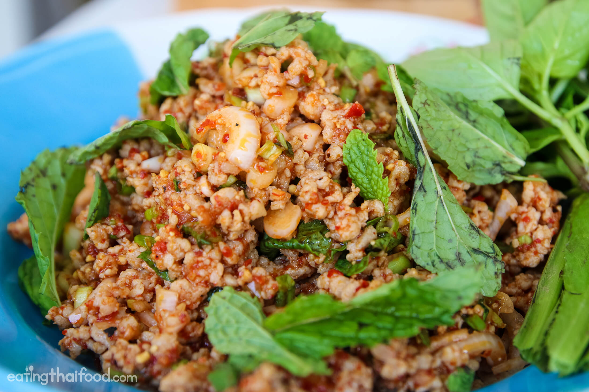

Thai Pork Laab (Larb)

Description
I love the flavors of Thai foob. Laarb, (sometimes also spelled Laab due to phonetic translations) might not be as well known as the famous Thai papaya salad (som tam) but it is protein-packed with minced meat and pulls together very quickly for a family style dish. Pair with rice, sticky rice, and some vegetables!
Ingredients
- 1.5 Tbsp white glutinous rice or jasmine rice
- 2 Tbsp water
- 250 g/9 oz ground pork (preferably not lean)
- 3 Tbsp finely sliced shallot
- ¼ cup mint leaves, rough chopped if leaves are large
- 2 Tbsp chopped cilantro
- 1 small green onion, chopped
- 2-3 leaves sawtooth coriander, rough chopped
- 2 Tbsp fish sauce
- 2 Tbsp lime juice
- 1-2 teaspoon chili flakes, or to taste
Steps
- Make toasted rice powder: Put glutinous white rice or jasmine rice in a dry sauté pan and cook over medium high heat, moving it constantly, until a deep brown colour develops. Grind with a coffee grinder or in a mortar and pestle into a sand-like texture.
- Add 2 tablespoon water to a medium pot over high heat, then add the pork and stir it constantly to break it up. Once it's cooked, remove from heat.
- Using the pot as your mixing bowl, add shallots into the pork and stir to break up the rings and lightly cook the shallots.
- Add the fish sauce, lime juice, the toasted rice powder, chili flakes, cilantro, sawtooth coriander and green onion into the pot and stir to mix. Taste and adjust seasoning as needed, which may vary because the amount of pork juice that remains in the pot will vary. If you feel like it's a little bit too strong (too tart, too salty) you can add just a pinch of sugar to balance, but do not make it sweet. Remember, there will be sticky rice to balance it all later!
- When ready to serve, stir in the fresh mint leaves. (I like to leave the mint out until serving time because they turn black when exposed to heat)/li>
- Garnish with some mint leaves and more chili flakes. Serve with some fresh crunchy vegetables and sticky rice!